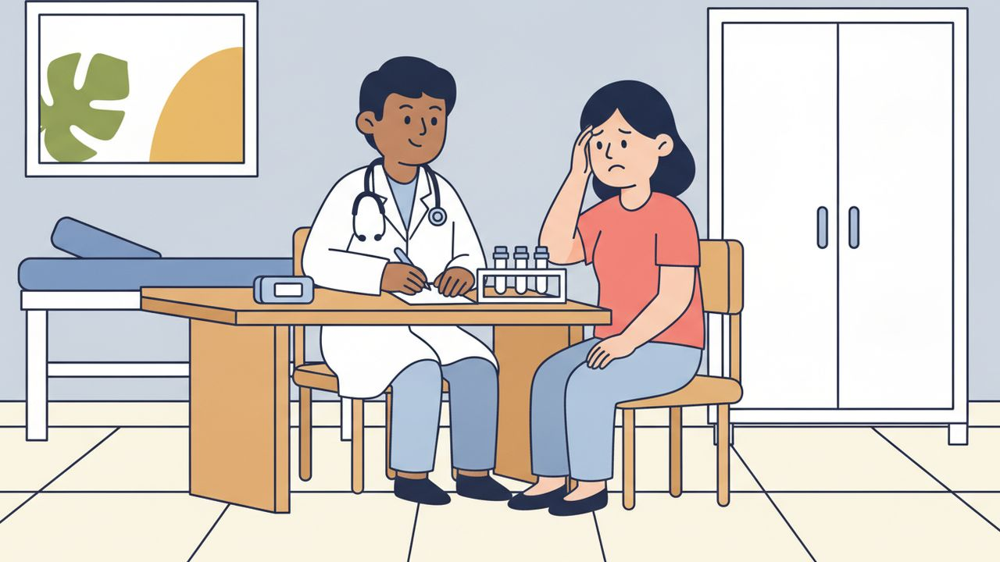

ロールプレイング ⑤
病院の診察

場面設定
同じクリニックの診察室。3日前から熱と頭痛が続いているお客様を、お医者さんが診る。症状を聞き取り、血液検査を指示して、結果を待つように伝えるまでの場面。
登場人物: お医者さん／お客様（បង、女性を想定）
保存されるファイル名: 05_病院の診察_v1.0_20261105.pdf
会話
お医者さん
ជម្រាបសួរ។
សូមអញ្ជើញអង្គុយទីនេះ។
តើបងមានអាការៈយ៉ាងម៉េច?
お客様
ជម្រាបសួរ។
ខ្ញុំក្ដៅខ្លួនហើយឈឺក្បាលខ្លាំង។
お医者さん
តើក្ដៅខ្លួនប៉ុន្មានថ្ងៃហើយ?
お客様
បីថ្ងៃហើយ។
តែក្ដៅតែពេលយប់។
お医者さん
តើបងឈឺកដែរឬទេ?
お客様
ចាស ខ្ញុំឈឺកខ្លាំង ហើយក្អកញឹក។
お医者さん
តើបងក្អួត ឬ រាកទេ?
お客様
ខ្ញុំអត់រាកទេ តែចង់ក្អួត។
ហើយខ្ញុំអស់កម្លាំងណាស់។
お医者さん
សូមហាមាត់។
ចាស អរគុណ។
ឥឡូវខ្ញុំវាស់កម្ដៅ។
お医者さん
កម្ដៅខ្លួនបងមាន៣៩អង្សា។
គ្រុនខ្ពស់។
お客様
តើជាគ្រុនឈាមទេ?
お医者さん
ខ្ញុំចង់ធ្វើតេស្តឈាម។
សូមអញ្ជើញទៅបន្ទប់ក្បែរនេះ។
お客様
តើឈឺទេ?
お医者さん
ឈឺបន្តិច តែមួយភ្លែតទេ។
お客様
តើលទ្ធផលចេញពេលណា?
お医者さん
ប្រហែលមួយម៉ោង។
ខ្ញុំគិតថាប្រហែលជាគ្រុនឈាម។
お客様
ចាស ខ្ញុំយល់ហើយ។
お医者さん
សូមផឹកទឹកច្រើន ហើយសម្រាកនៅបន្ទប់រង់ចាំ។
ខ្ញុំនឹងហៅបង ពេលលទ្ធផលចេញ។
お客様
អរគុណសម្រាប់ការណែនាំ!
フリートークにつながる質問
会話のあと、役を離れてこの質問で話を広げてみてください。答えは思いつく範囲で構いません。
質問 1
តើបងធ្លាប់ឈឺខ្លាំងទេ?
質問 2
វិធីការពារកុំឲ្យឈឺគឺអ្វី?
質問 3
មន្ទីរពេទ្យក្នុងក្តីសុបិន្តរបស់បងគឺជាមន្ទីរពេទ្យដូចម្តេច?
扱った単語（65語）
| # | クメール語 | 読み方 | 意味 |
|---|---|---|---|
| 1 | ជម្រាបសួរ | チュムリアップ・スオ | こんにちは（丁寧な挨拶） |
| 2 | អញ្ជើញ | オンチューニュ | どうぞ〜なさる（丁寧な勧誘） |
| 3 | អង្គុយ | オンクイ | 座る |
| 4 | អាការៈ | アーカーラ | 症状 |
| 5 | យ៉ាងម៉េច | ヤーン・メッチ | どのように |
| 6 | ក្ដៅ | クダウ | 熱い |
| 7 | ខ្លួន | クルオン | 自分 |
| 8 | ឈឺ | チュー | 痛い |
| 9 | ក្បាល | クバール | 頭 |
| 10 | ខ្លាំង | クラン | 強く・とても |
| 11 | ប៉ុន្មាន | ポンマーン | いくつ |
| 12 | ថ្ងៃ | タガイ | 日 |
| 13 | ពេល | ペール | 時 |
| 14 | យប់ | ヨップ | 夜 |
| 15 | ក | コー | のど・首 |
| 16 | ដែរឬទេ | ダエ・ルー・テー | 〜もですか？ |
| 17 | ក្អក | クオーク | 咳をする |
| 18 | ញឹក | ニュック | 頻繁に・何度も |
| 19 | ក្អួត | クオット | 吐く |
| 20 | រាក | リエク | 下痢 |
| 21 | ចង់ | チョン | したい |
| 22 | អស់កម្លាំង | オホ・コムラン | 疲れた |
| 23 | ណាស់ | ナハ | とても |
| 24 | ហា | ハー | 開ける（口を） |
| 25 | មាត់ | モアット | 口 |
| 26 | អរគុណ | オークン | ありがとう |
| 27 | ឥឡូវ | エイロウ | 今 |
| 28 | វាស់ | ヴォア | 測る |
| 29 | កម្ដៅ | コムダウ | 体温・熱 |
| 30 | អង្សា | オンサー | 度（温度） |
| 31 | គ្រុន | クロン | 熱がある |
| 32 | ខ្ពស់ | クポホ | 高い（数値が） |
| 33 | ឈាម | チアム | 血 |
| 34 | ធ្វើ | トブー | する |
| 35 | តេស្តឈាម | テッ・チアム | 血液検査 |
| 36 | ទៅ | タウ | 行く |
| 37 | បន្ទប់ | ボントップ | 部屋 |
| 38 | ក្បែរ | クバエ | 近く |
| 39 | ឈឺទេ | チュー・テー | 痛いですか？ |
| 40 | ឈឺបន្តិច | チュー・ボンティ | 少し痛い |
| 41 | ភ្លែត | プレート | 一瞬 |
| 42 | លទ្ធផល | ラッタパル | 結果 |
| 43 | ចេញ | チェン | 出かける |
| 44 | ប្រហែល | プロハエル | たぶん |
| 45 | ម៉ោង | マオン | 時間・〜時 |
| 46 | គិត | クット | 考える |
| 47 | ថា | ター | 言う |
| 48 | យល់ | ヨル | 分かる |
| 49 | ផឹក | パック | 飲む |
| 50 | ទឹក | トゥック | 水 |
| 51 | សម្រាក | ソムラーク | 休む |
| 52 | រង់ចាំ | ロンチャム | 待つ |
| 53 | នឹង | ヌン | これから〜する（未来） |
| 54 | ហៅ | ハウ | 呼ぶ |
| 55 | សម្រាប់ | ソムラップ | 〜のために |
| 56 | ការ | カー | 〜すること（名詞を作る） |
| 57 | ណែនាំ | ナエノアム | 指導 (しどう) / アドバイス |
| 58 | ធ្លាប់ | トロアップ | 〜したことがある |
| 59 | វិធី | ヴィティー | 方法 |
| 60 | ការពារ | カーピア | 守る・防ぐ |
| 61 | កុំ | コム | 〜しないで |
| 62 | ឲ្យ | アオイ | 与える、～させる |
| 63 | មន្ទីរពេទ្យ | モンティー・ペート | 病院 |
| 64 | ក្តីសុបិន្ត | クダイ・ソバン | 夢・理想 |
| 65 | ដូចម្តេច | ドーチ・ムデッチ | どのような |
表現・文法の解説
1ក្ដៅខ្លួន と គ្រុន — 患者は「体が熱い」、医者は「熱」
ក្ដៅខ្លួន（クダウ・クルオン） は「体が熱い」。患者が自分の症状を言うときはこちらを使う（2番・3番・4番）。គ្រុន（クロン） は「熱」という状態を指す語で、10番で医者が គ្រុនខ្ពស់（高熱です）と言うように、診断として述べるときに出てくる。កម្ដៅខ្លួន（コムダウ・クルオン） は「体温」という名詞で、数字を言うときに使う（10番 កម្ដៅខ្លួនបងមាន៣៩អង្សា）。
2តែ の2つの意味 — 「でも」と「〜だけ」
4番の តែក្ដៅតែពេលយប់ には តែ が2回出てくる。1つめは「でも」（文のつなぎ）、2つめは「〜だけ」（夜だけ）。8番の តែចង់ក្អួត は「でも吐きそう」。どちらの意味かは位置で決まる。文の頭なら「でも」、名詞の前なら「〜だけ」。
3ប្រហែល の2つの使い方 — 「〜くらい」と「たぶん」
16番には ប្រហែល が2回出てくる。ប្រហែលមួយម៉ោង は「1時間くらい」（数量の見積もり）。ប្រហែលជាគ្រុនឈាម は「たぶんデング熱」（推測）。ប្រហែលជា と ជា が付くと推測になる。
4〜ឬ〜ទេ?（〜ですか、それとも〜ですか）
7番の តើបងក្អួត ឬ រាកទេ?（吐きましたか、それとも下痢ですか）。ឬ（ルー）が「または」。症状をいくつか並べて聞くときに医者がよく使う。
5អង្សា（度）— 温度の単位
体温や気温の「度」は អង្សា（オンサー）。フランス語から入った ដឺក្រេ（ドゥクレー）も通じるが、話すときは អង្សា が普通。កម្ដៅខ្លួនបងមាន៣៩អង្សា（体温は39度あります）のように使う。